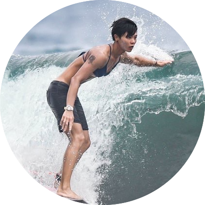
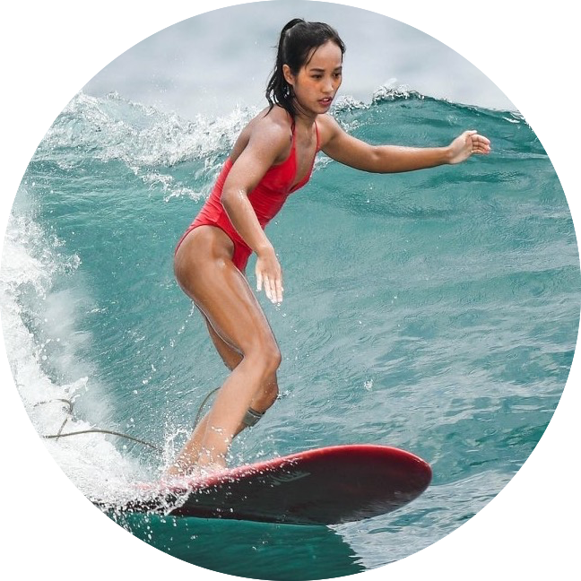

SURFTREE 衝浪去
learning and growing, just like a tree
學衝浪沒有捷徑，像種樹一樣，慢慢且扎實的
愛衝浪，不僅是喜歡從事這項運動，更深深為這樣的生活方式著迷
台灣的衝浪文化發展了近半個世紀
想接觸到衝浪其實很容易
SURFTREE 提供的不只是一次性的體驗
想要帶你深刻探索衝浪世界
希望你不僅是衝過浪，還要愛上衝浪
成為彼此的夥伴，在衝浪世界裡茁壯
一起衝浪去！
我們提供專業衝浪訓練，歡迎每一位想深入學習的衝浪的人。
TEAM

小八/ 衝浪教練
接觸衝浪約12年，長短板都玩，非常具有天份的選手(自己說
)。熱愛教學，熟知學習衝浪的各個環節，對每個階段的學員都能認真細心的傳達她對衝浪的想法。

Ying/ CEO
接觸衝浪約4年，包辦 SURFTREE 衝浪教學以外的大小事(笑)
了解更多
聯絡我們
BACK
初級訓練 Basic
課程對象
課程目標
- 建立穩固的基礎知識
- 能適應腰胸以內的浪況
- 獨立追浪下浪，並且能夠穩定左右跑及流暢的控制方向
課程內容
-
海象介紹
- 認識海流，知道如何避開危險
- 如何判斷浪況是否適合自己的程度
-
衝浪禮儀
- 如何定位在正確的等浪位置
- 怎樣算搶浪？如何避免搶浪？
- 浪頭的人一直下，永遠都排不到我，該怎麼辦？
- 如何判斷路線，避免造成碰撞或阻擋他人
-
裝備介紹
- 浪板種類&板型介紹
- 舵
- 防寒衣：我需要防寒衣嗎？該如何挑選
- 蠟：面蠟底蠟差別是什麼？需要那一種？
-
起乘
-
划水&追浪
- 依據浪況調整划水節奏，什麼時候應該加速？要往後看還是往前看？
- Set進來時，該挑選哪一道浪？
- 想要增強划水技能，該選擇什麼樣的訓練？
-
轉向
了解更多
聯絡我們
BACK
進階訓練 Advanced
課程對象
課程目標
- 適應一人以內的浪況，並能在海上判斷及應變突發狀況
- 進階技巧，加速/ 走板/ 板頭駕乘/ CUTBACK/ SNAP 等
- 掌握浪的節奏，在理想的時間點及浪壁位置做出動作
課程內容
-
海況判斷
- 在陌生浪點或面對不同的海象，如何判斷安全下水位置
- 除了浪況預報以外，還能怎麼判斷浪況？
- 如何依據當下條件：潮汐、風向、浪向，或是水裡浪人的衝浪狀況 等... 選擇浪點
- 如何有效利用海流
-
等浪&追浪
- 觀察浪況變化，動態調整位置
- 面對較大的浪，追浪節奏該做什麼調整？
- 浪面較陡或浪速快時如何適應
-
浪板挑選＆風格建立
- 認識不同風格，衝浪不應該是駕馭浪，而是與浪共舞
- 嘗試不同板型並尋找適合自己的板子
-
控板
- 如何控制速度及方向，讓自己保持在一道浪最好的位置
- 如何在做動作時保有柔軟度及張力而不失速度
- 如何結合控制力、速度、流暢度、協調性，安全又優雅地完成一道浪
了解更多
聯絡我們
BACK
課程方案
為提升學習品質＆保持進步
我們希望除了課程時間以外
你也需要安排額外的時間自行練習
課程設計採以下方式
- 2～2.5 小時/堂
- 1對1，學員程度相近時最多可至1對3
| 課程方案 |
使用期限 |
| $7200 / 4堂 |
30天 |
| $8400 / 4堂 |
60天 |
| $20000 / 12堂 |
180天 |
| $1500 / 初次體驗 |
新學員，限一次 |
注意事項
- 教學地點以 烏石港 及 鄰近浪點 為主，視浪況調整
- 課程費用皆不含裝備，租借浪板 $400
交通方式
- 國光客運1877路線：
- 火車搭乘至頭城車站
我們提供車站至浪點接送
了解更多
報名或其他問題歡迎聯絡我們
BACK
常見問題 FAQ
完全沒有接觸過衝浪，適合這個課程嗎？
初級和進階訓練皆是針對已經接觸過並且想提升衝浪技巧的學員開設的。如果你完全零經驗但是想要衝浪，歡迎聯絡我們，會提供建議並另外安排體驗課程。
我沒有裝備
我們有配合的店家可租借相關用品，教練會依照衝浪程度及身材為你挑選合適的板子。
我應該選擇 Basic 還是 Advanced ?
不用擔心，我們會為你評估現階段適合的課程內容
了解更多
其他問題歡迎聯絡我們
BACK
相關網站
了解更多
其他問題歡迎聯絡我們
BACK